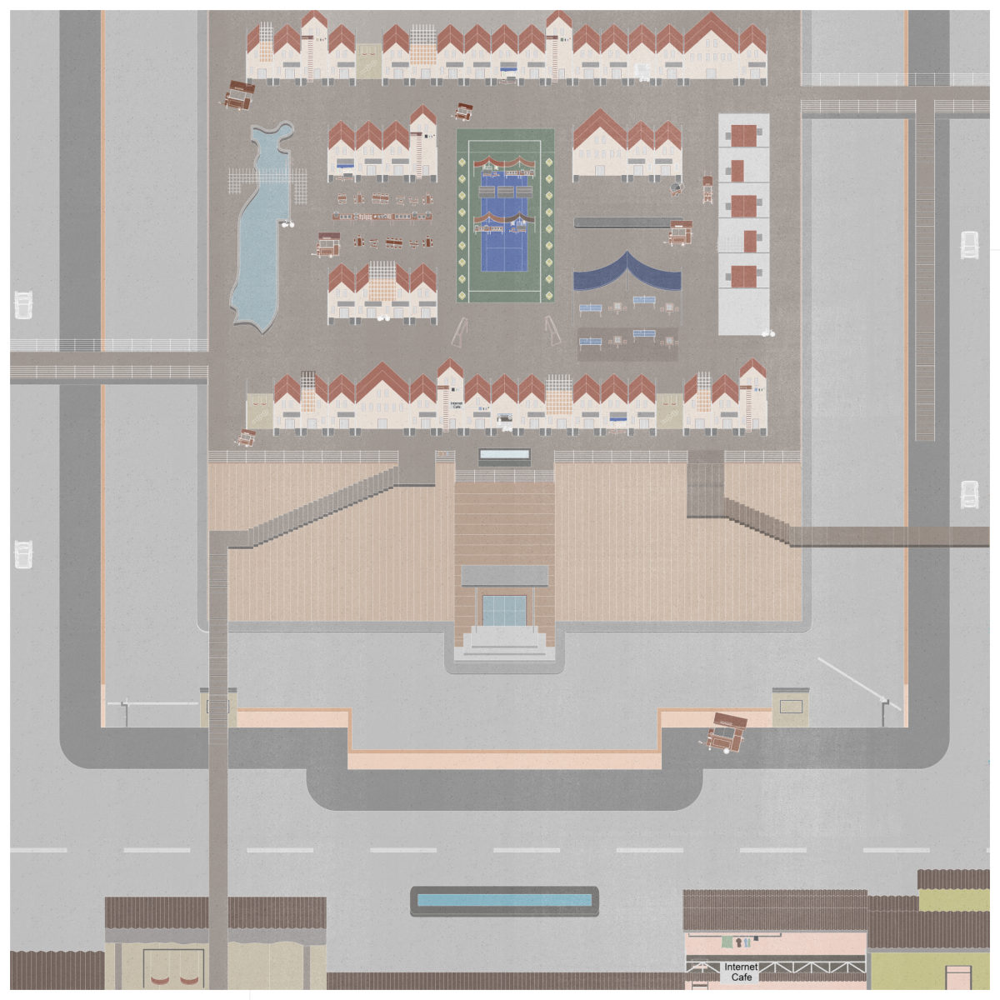
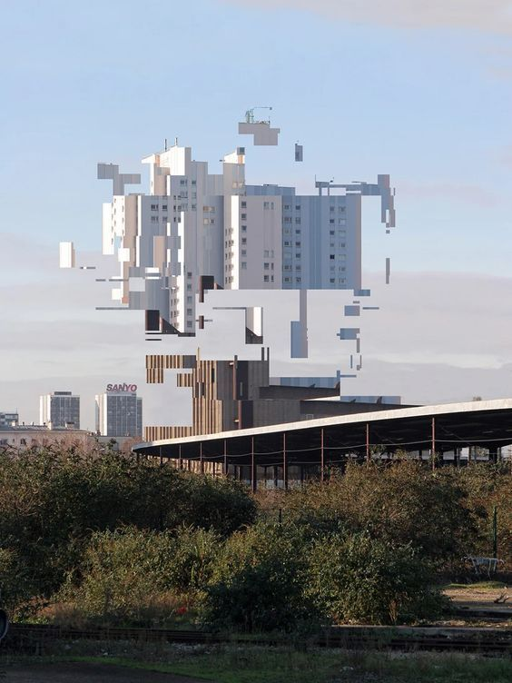
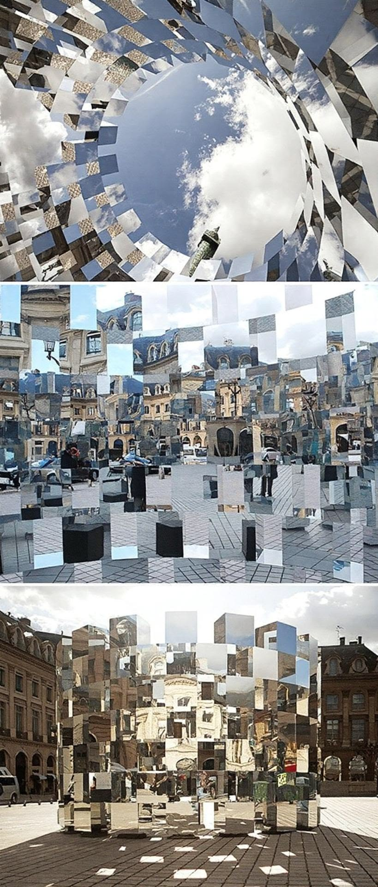
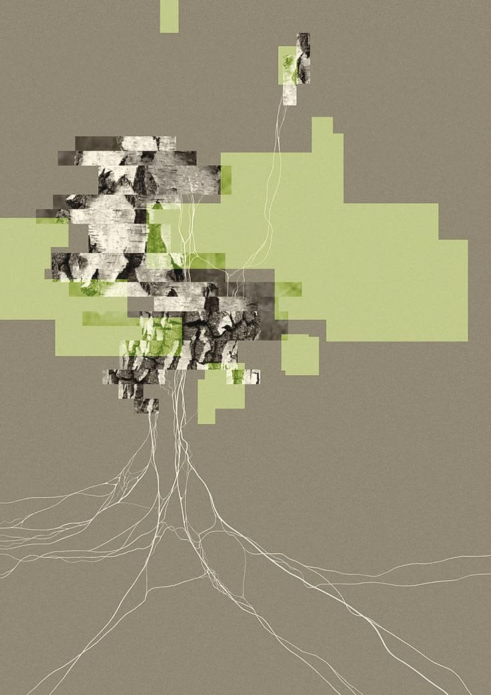
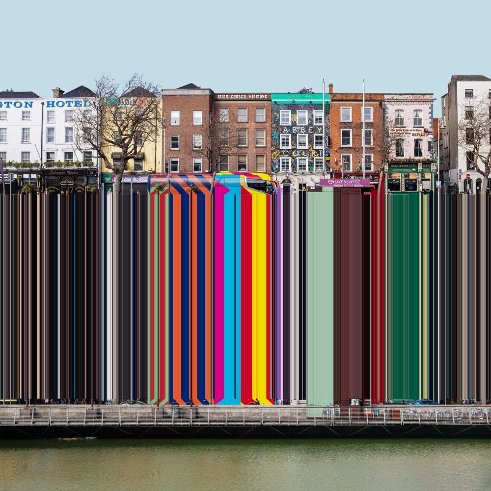

Research Question
Based on my precedent study the Trash Track Project I am most interested in two main topics, the power of data in revealing hidden network/hidden structures that are often invisible and the power of data that is gathered and collected in a crowdsource way. Inspired by the work of Carlo Ratti, I am intrigued by Ratti's approach as a human centered approach in gathering data as a way to study and critique physical and social infrastructure.
These interests build on questions I began exploring in my undergraduate thesis, Why Are You Shopping in My Backyard?, which examined the relationship between Jakarta's kampungs and suburban shopping malls. Rather than focusing solely on buildings, I sought to uncover the political, economic, and social systems that produced these contrasting urban conditions. While my thesis relied primarily on architectural research, mapping, and prototyping, the Trash Track Project has led me to consider how data can become another medium for revealing hidden urban relationships. I am particularly interested in how these methods might uncover overlooked forms of urbanism or suggest alternative spatial typologies that challenge conventional ways of understanding the city. Although I am still uncertain whether my project will be geographically situated in a specific context, I am interested in exploring informal and alternative systems and how computational methods can help make them more legible.
I am also interested in the conversations and complexities surrounding technological solutionism that emerge when attempting to address problems through data-driven approaches. At the same time, I am drawn to the tensions between making data more available and open while navigating concerns around privacy, surveillance, and who ultimately benefits from the collection and use of data.
Keywords
Intersecting Fields
Yes. The project intersects urbanism, computation, architecture, mapping, and social research, using computational methods to investigate hidden infrastructures, informal urban systems, and the relationship between data, space, and society.
Historical Lineage
Trash Track Project
- Glitching as a tool to reveal
- Continuing trajectory of my thesis
- Examining the stark contrasts between Jakarta's informal neighborhoods and gated communities.
- The thesis investigated the historical and contextual forces that shaped these transformations and the resulting physical conditions.
- Explored ideas of foreign, imported, and local influences through the lens of architecture, aesthetics, and cultural identity.
- Examined the effects of globalization and prolonged colonial histories on urban development and spatial practices.
- This analytical approach can be extended toward understanding how data and computation can reveal other invisible systems, networks, and overlooked practices.
- Still gauging, still understanding, WIP.
Community
Some Important Projects and Readings
- Trash Track Project by MIT Senseable Lab
- Half Earth Socialism
- Imagining an alternative system
- All Data Are Local — Yanni Loukissas
- Situated data, nuanced, contextual
- Data Feminism
- Who is data made by, who is it for?
- Radical Friends
- Proposal of a collective and collaborative infrastructure
- QueerOS
- Degrowth as an alternative system
- Slow Technology Readers
- Forensic Architecture
Situated Technology
Inspired by the works of Forensic Architecture, Data Against Femicide, and projects such as the Library of Missing Datasets, my project is interested in exploring the power of data as a tool for revealing hidden conditions and creating greater accessibility. I am interested in asking how data and computation can become instruments of empowerment when they are made accessible to broader communities. As designers and practitioners who are becoming increasingly fluent in computational methods, how can we responsibly engage with data, and how can we ensure that these tools are used with ethical and socially conscious intentions?
Also inspired by one of our first readings, I am interested in questioning whether expanding datasets, particularly by including information from communities that have historically been marginalized or overlooked, can help open new conversations and create more inclusive outcomes. Could more representative data allow our products, projects, and urban proposals to become more accessible and less biased?
Reference Images




